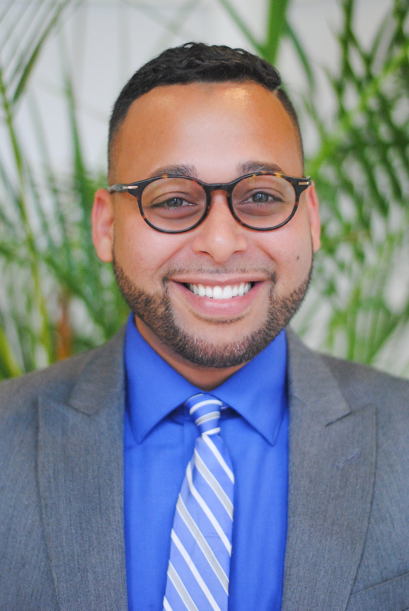

About Me

Greetings,
My name is Noel Alvarez but go by Barney. I'm originally from Ponce, Puerto Rico but have lived in Orlando, Florida for most of my live by now I consider myself a certified Floridian. I have been happily married for 8 years to my wife Kathy and we have been blessed to have two beautiful children Sarai Victoria (4 years old) and Malakai Josiah (9 months old). I currently work for Jp Morgan Chase as a Business Analyst for the Performance Operations Unit my main function is to analyze the performance of our different lines of business and point to areas of opportunity.
Some of my interest include playing basketball, video games, running, and I love to spend time with family and serving at my church. My daughter loves to challenge me at Uno's on a daily basis most of the time she cheats or I let her win but on those rare occassions when daddy wins I teach her the importance of good sportsmanship. My family drives me to do better for them and myself they are the driving force behind me. I live by the believe that God comes first and foremost as he is the provider of life itself and everything comes from Him. Without God I wouldn't have been blessed with such a beautiful family.